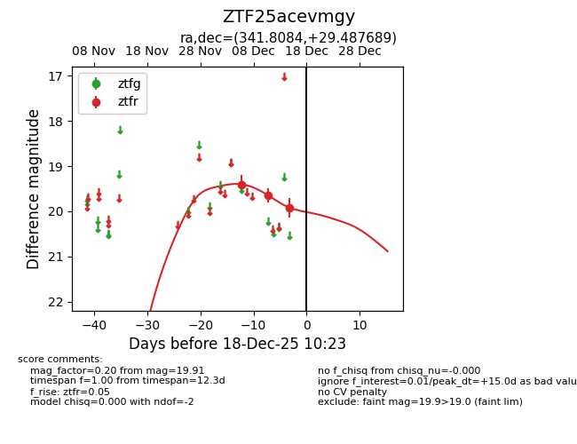
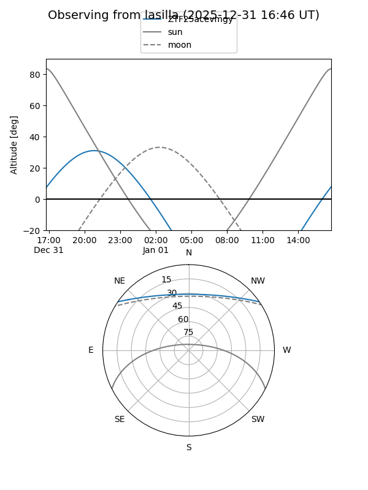
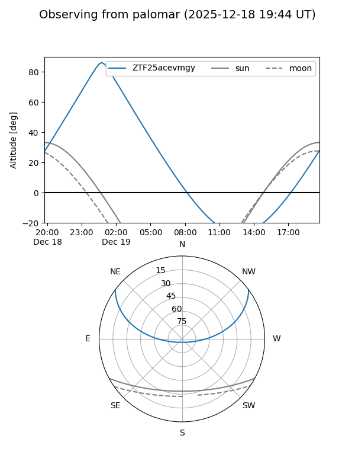
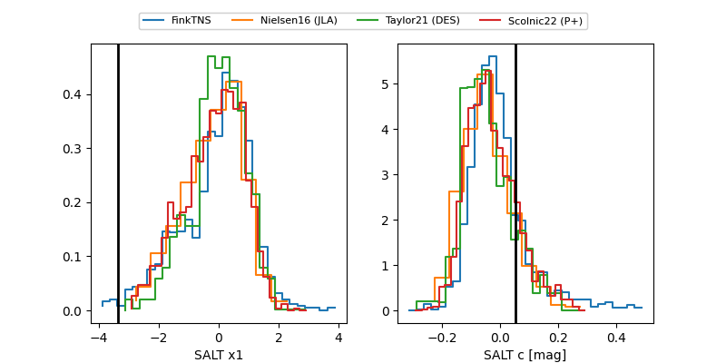

ZTF25acevmgy
Target ZTF25acevmgy at 2025-12-31 18:00
Aliases and brokers:
FINK: link
Lasair: link
ALeRCE: link
alt names
ZTF25acevmgy (ztf,fink_ztf)
Coordinates:
equatorial (ra, dec) = 341.8084,+29.48769
equatorial (HMS+DMS) = 22:47:14.02,+29:29:15.68
galactic (l, b) = (92.9466,-26.05540)
Flags:
Photometry:
last ztfr=19.90
4 ztfr detections
Lightcurve

Visibility


Additional plots
